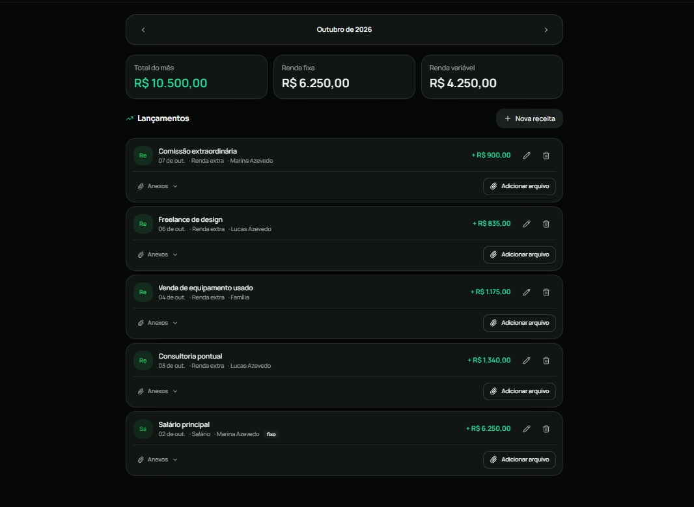
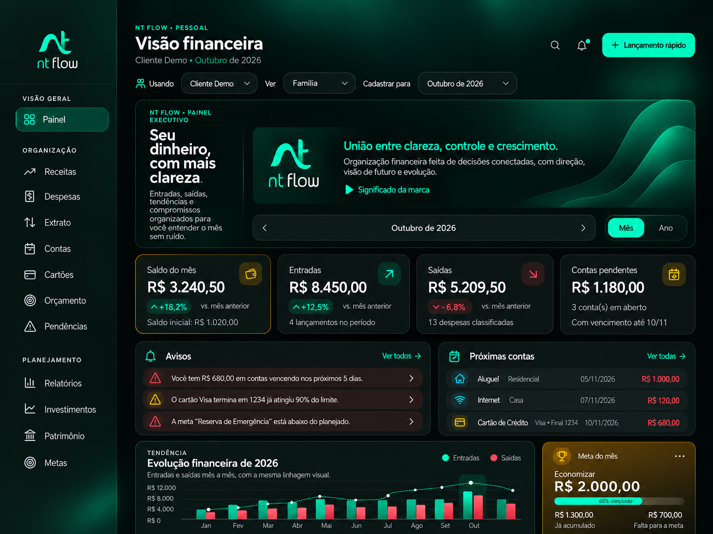
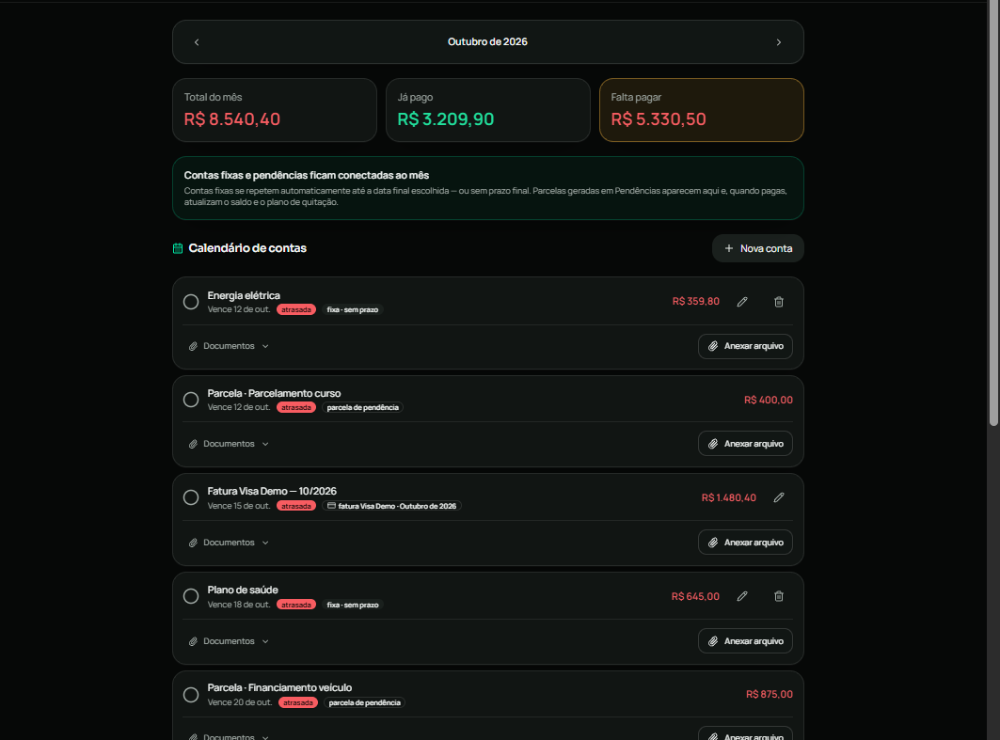
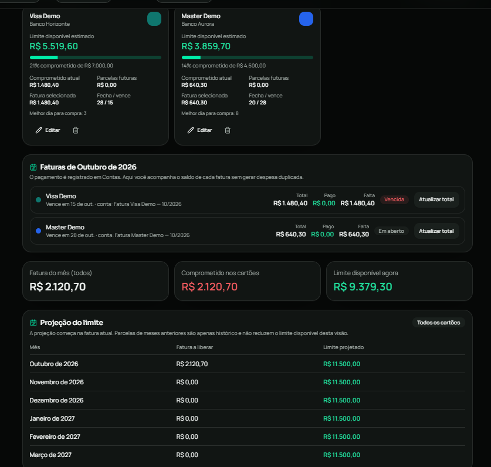
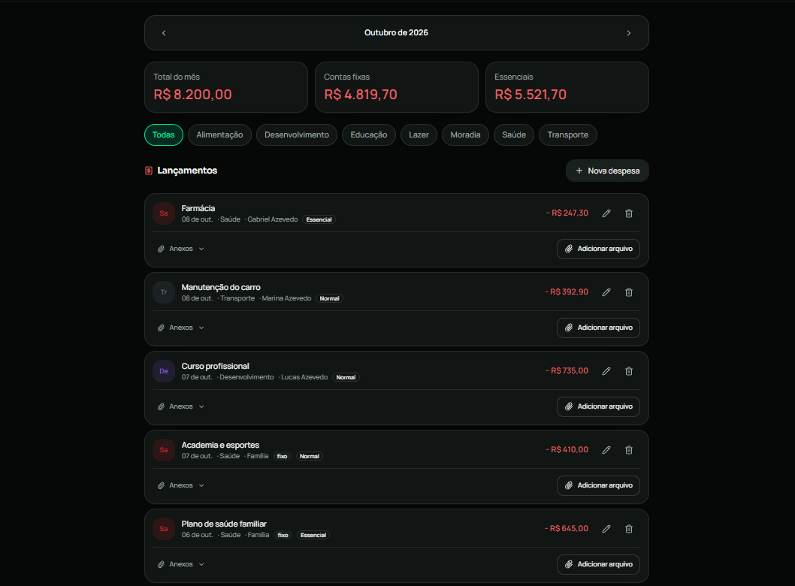

01 / ENTRADAS
Receitas
Veja o total do mês, acompanhe rendas fixas e variáveis e consulte cada lançamento.

Imagem da tela de Receitas em preparação.
O NT Flow organiza a sua vida financeira.

Organização financeira feita de decisões conectadas, com direção, visão de futuro e evolução.
O símbolo desenha um fluxo contínuo entre as letras n e t: movimento constante do dinheiro, decisões conectadas e evolução. O verde neon traduz energia, precisão e crescimento; o preto profundo, foco e tecnologia.
Receitas, Contas, Cartões e Despesas, na ordem da sua rotina. Capturas do modo Pessoal com dados demonstrativos.
Veja o total do mês, acompanhe rendas fixas e variáveis e consulte cada lançamento.

Acompanhe o que já foi pago, o que falta pagar e os próximos vencimentos.

Consulte o limite disponível, as faturas e os valores comprometidos nos cartões.

Veja os gastos do mês por categoria e consulte os lançamentos e comprovantes.

Acompanhe suas categorias e seu planejamento.
Mantenha seus objetivos à vista.
Consulte indicadores da sua evolução financeira.
Consulte a movimentação em sequência.
Visualize compromissos parcelados.
Acompanhe seus bens e sua evolução.
O modo Pessoal também reúne Extrato, Pendências, Investimentos e Patrimônio. O NT Flow oferece uma área para Empresa/PJ.
Quer ver como o aplicativo se encaixa na sua rotina? Converse com a equipe sobre o acesso e as opções de contratação.
Quero contratar o NT FlowSe você precisa abrir três planilhas para descobrir, você ainda não tem a informação.
Desorganização tem custo. Só não vem em um boleto.
Sim. Existe o modo Pessoal e o modo Empresa/PJ. A identidade e o método são os mesmos; mudam as dores, os exemplos e as funcionalidades de cada perfil.
Fale com a equipe para conhecer as opções de contratação e começar a usar o NT Flow. Se precisar de apoio para organizar seus processos financeiros, também pode conhecer a consultoria.
Não. É uma ferramenta de controle e acompanhamento. Não oferece recomendação de compra ou venda de investimentos.
O painel usa dados demonstrativos. As telas de Receitas, Contas, Cartões e Despesas são capturas do modo demonstração, com nomes e valores fictícios.
Os valores não estão publicados nesta página. Fale com a equipe para conhecer as opções de contratação do NT Flow.
Fale pelo WhatsApp (22) 98100-0266 para conhecer o aplicativo e as opções de contratação. Se quiser, a equipe também pode explicar o acompanhamento consultivo.
Quero contratar o NT Flow